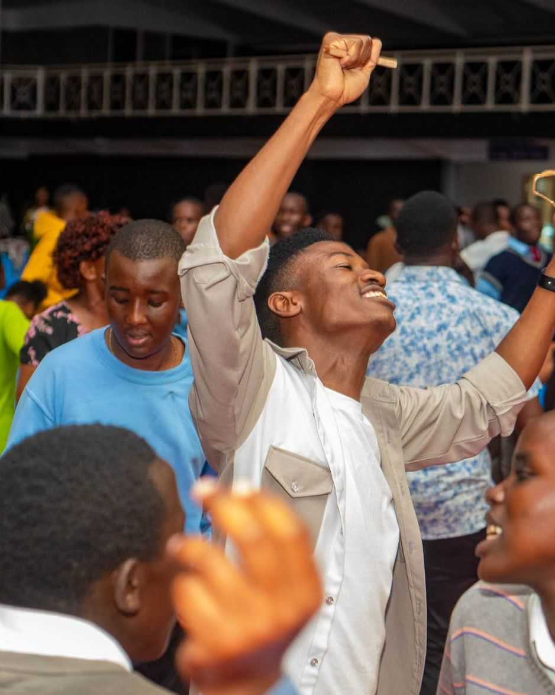
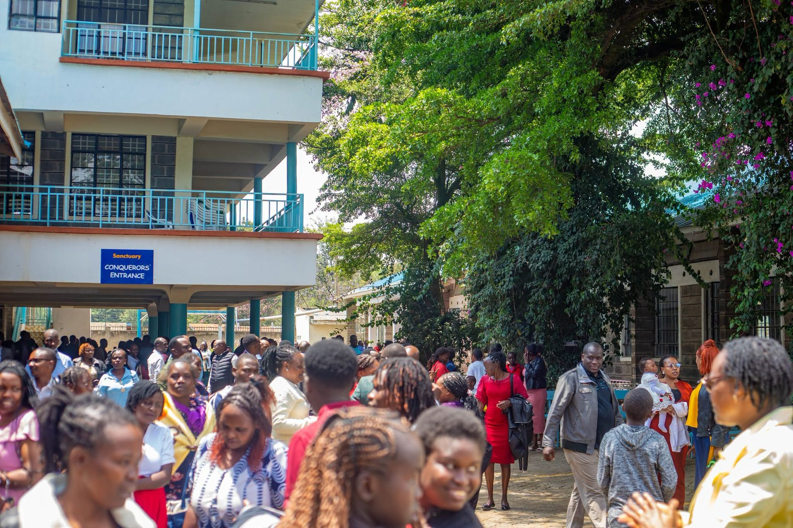

Special service · Sunday 6 December · 9:00 am – 12:30 pm
Thanksgiving Sunday
Thanksgiving Sunday with Rev. Elijah & Mary Maina (as named on the church's poster). “The LORD hath done great things for us; whereof we are glad.” — Psalms 126:3
Every Sunday on General Kariba Street, Freehold — a church family reconciling people to God and equipping them for ministry.

Life Celebration Centre exists to reconcile people to God, equip them for Ministry to God and the people with a transformative agenda.
Hospitality Integrity Servanthood Fellowship Commitment Excellence
Led by Rev. Elijah Mwangi, Lead Pastor — read our story →
Every Sunday at LCC, General Kariba Street, Freehold: First Service 7:30–9:00 am, Second Service 10:00 am–12 noon.
Plan your visitBoth Sunday services are streamed every week on the LCC channel.
Watch online22 Nov 2026
Latest services
Streamed on 15 Nov 2026. Catch up here or on YouTube.

Thanksgiving Sunday with Rev. Elijah & Mary Maina (as named on the church's poster). “The LORD hath done great things for us; whereof we are glad.” — Psalms 126:3
Commissioning for the Global Mission · Anchor scripture John 4:35

General Kariba Street, Freehold, Nakuru · First Service 7:30 am · Second Service 10:00 am